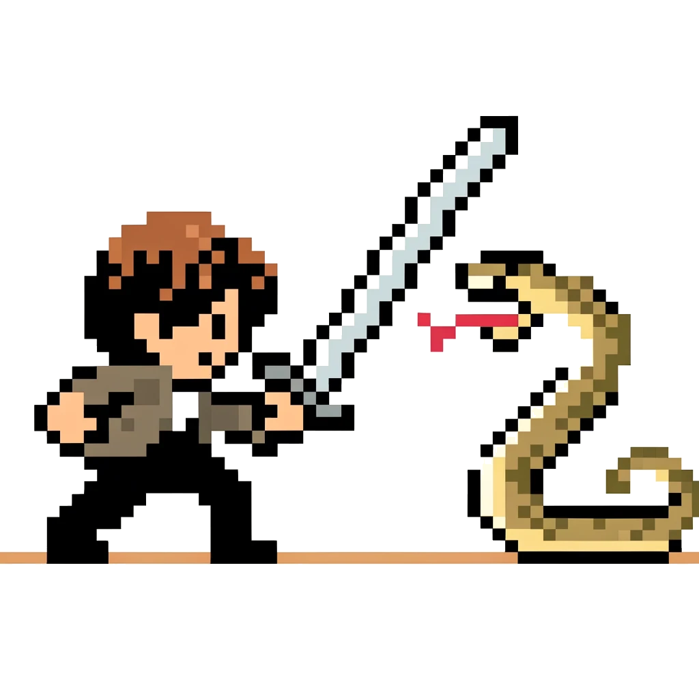

Hi I'm Samuel
(smp46)
I'm a passionate undergrad studying Computer Science at the University of Queensland. This website highlights some of my achievements and skills as an aspiring software developer.